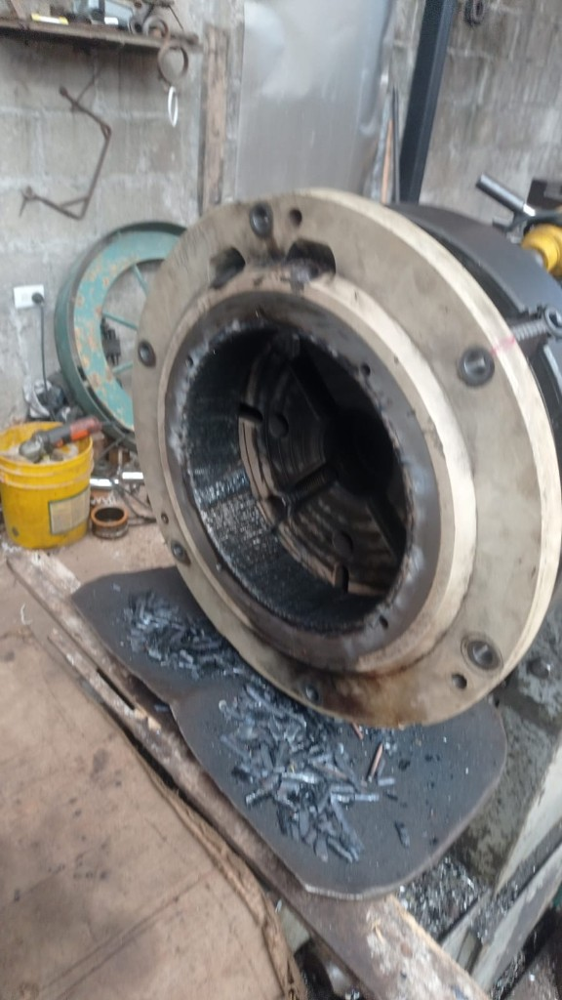

ANÁLISIS DE CAUSA RAÍZ · RCA-GEN-001
RODAMIENTO DEL GENERADOR
CPW03 / G53
COSTAYACO · 26 DE OCTUBRE DE 2026
ANÁLISIS DE CAUSA RAÍZ · RCA-GEN-001
COSTAYACO · 26 DE OCTUBRE DE 2026
| Campo | Detalle |
|---|---|
| Código | RCA-GEN-001 |
| Máquina | CPW03, también G53. Motor Jenbacher J420 y generador. 1.800 rpm. |
| Componente | Rodamiento del lado libre del generador. Alojamiento del lado acoplado en seguimiento. |
| Medición | 17-07-2026, Windrock 6400, Nelson David Sandoval. Informe F040-1. Norma ISO 8528-9. |
| Horas en la medición | 12.142 h, con la máquina en 449 kW. |
| Horas al 24-10-2026 | 14.266 h, formato FO-GE-033 RF17. |
| Estado | Causa directa identificada. Causa física del desgaste pendiente de confirmar al abrir el apoyo. Plan de acción definido. |
Fuentes: informe Windrock F040-1, sábana de mantenimientos Putumayo, planeación 26 oct–1 nov 2026, FO-GE-033 de octubre y fotografía de taller.
2El 17 de julio de 2026 el monitoreo dinámico de CPW03 clasificó el rodamiento del lado libre del generador en etapa 3. La aceleración llegó a 2,04 g rms, con incremento de tendencia y un delta en 92,8 Hz, frecuencia que el informe asocia al rodamiento. El lado acoplado quedó en 0,63 g rms, con deterioro del rodamiento y de su alojamiento. En velocidad, los dos apoyos siguen dentro de ISO 8528-9 (máximo 0,106 ips frente a 0,787). El informe no ordenó paro inmediato. Ordenó monitoreo mensual por encima de 600 kW y el reemplazo en 3 a 4 meses.
Ese plazo empezó el 17 de octubre y cierra el 17 de noviembre. Entre la medición y el 24 de octubre la máquina sumó 2.124 horas y tuvo seis salidas por gas o por la red. La planeación del 26 de octubre al 1 de noviembre deja a CPW03 disponible y no programa el cambio. La fotografía de taller muestra un alojamiento con el diámetro interior rayado y viruta de mecanizado. La pieza no identifica el lado.
Determinar la causa directa, lo que puede afirmarse como causa raíz con la evidencia disponible, y las causas que mantienen la máquina expuesta, y dejar el plan para cerrar el hallazgo.
| Condición de la medición | Valor | Lectura |
|---|---|---|
| Velocidad y horas | 1.800 rpm · 12.142 h | Punto de partida del plazo |
| Potencia | 449 kW | Por debajo de los 600 kW que el informe pide para el seguimiento. La baja carga agrava la vibración. |
| Aceite / refrigerante / admisión | 4,19 bar · 81,4 °C · 85,6 °C · 37,3 °C | Condición registrada. No hay análisis de aceite del generador en este paquete. |
| Puntos | Horizontal, vertical y axial | Lado acoplado y lado libre, lo más cerca posible de los rodamientos. |
| Apoyo | Evidencia del informe | Clasificación |
|---|---|---|
| Lado libre | 2,04 g rms en aceleración. Global del espectro vertical 2,004 g rms. Horizontal 0,828 g rms. Delta en 92,8 Hz, frecuencia de rodamiento. Tendencia en aumento. | Etapa 3. Es el rodamiento a cambiar. |
| Lado acoplado | 0,63 g rms. Espectro y forma de onda con deterioro del rodamiento y de su alojamiento. En velocidad predomina 1X en vertical, sin condición anormal por ese indicador. | Seguimiento. Inspeccionar al abrir. |
| Velocidad global | Acoplado: axial 0,037, horizontal 0,106, vertical 0,096 ips. Libre: 0,041, 0,088 y 0,084 ips. Límite ISO 8528-9: 0,787 ips. | Tolerable. No descarta la etapa 3. |
El límite de la norma que usa el informe es de velocidad. El defecto del rodamiento aparece en aceleración y en su frecuencia propia. Un apoyo puede estar en velocidad tolerable y, al mismo tiempo, en etapa 3.
| Fecha | Horas | Hecho |
|---|---|---|
| 17-07-2026 | 12.142 h | Windrock. Lado libre en etapa 3. Plazo de cambio: 17 oct a 17 nov. |
| 02-10 · 07:11 | — | RF02. CPW03 sale por potencia inversa al caer el gas tratado. Vuelve 07:38. |
| 06-10 · 15:17 | 13.855 h | RF05. Shutdown IE650 por MRU y chiller. 3 h 31 min fuera. |
| 08-10 · 12:11 | 13.894 h | RF06. Shutdown IE650 por la MRU, con 684 kW. Vuelve 12:42. |
| 18-10 · 13:07 | — | RF10. Pérdida del SIN y salida de la MRU. Fuera hasta las 14:05. |
| 19-10 · 00:06 | 14.134 h | RF11. Salida de la MRU. Barraje entre 62,3 y 62,7 Hz. 39 min fuera. |
| 24-10 · 14:43 | 14.266 h | RF17. Reconectador de EEP y salida de la MRU. Vuelve 15:23. |
| 26-10 a 01-11 | — | Planeación. CPW03 disponible. No hay cambio de rodamiento. |
| 04-11-2026 | — | Sábana. Siguiente celda de CPW03, código 10, 20 h-h, todavía pendiente. No describe el cambio del rodamiento. |
Las salidas de octubre son externas al rodamiento. Suman ciclos de parada y rearranque sobre un apoyo que ya estaba en etapa 3. De 12.142 h a 14.266 h hay 2.124 horas.
6
| Pregunta | Respuesta con la evidencia | |
|---|---|---|
| 1 | ¿Por qué el rodamiento es el tema de esta reunión? | Porque el 17 de julio quedó en etapa 3 y el plazo de 3 a 4 meses para cambiarlo está abierto desde el 17 de octubre. |
| 2 | ¿Por qué etapa 3 y no solo una vibración alta? | Porque hay 2,04 g rms, la tendencia sube y aparece un delta en 92,8 Hz, frecuencia que el informe atribuye al rodamiento del lado libre. |
| 3 | ¿Por qué no se paró el 17 de julio? | Porque la velocidad global cumplía ISO 8528-9 y el informe declaró que no había acción inmediata. |
| 4 | ¿Por qué el riesgo es mayor el 26 de octubre? | Porque se acumularon 2.124 horas, el plazo ya empezó y el rodamiento no se ha cambiado. El lado acoplado sigue con daño de rodamiento y alojamiento. |
| 5 | ¿Por qué sigue en servicio esta semana? | Porque la planeación del 26 de octubre al 1 de noviembre no tiene la parada. CPW03 está en generación disponible. |
Estos porqués explican la condición declarada y por qué la máquina sigue expuesta. No explican todavía por qué se dañó el rodamiento. Lubricación, alineación, descarga eléctrica o pérdida de ajuste del alojamiento se confirman al abrir.
| Clasificación | Descripción |
|---|---|
| Causa directa | Deterioro del rodamiento del lado libre del generador de CPW03, en etapa 3, con 2,04 g rms y frecuencia de rodamiento en 92,8 Hz. |
| Causa asociada | Deterioro del rodamiento del lado acoplado y de su alojamiento, en seguimiento, con 0,63 g rms. La fotografía muestra un alojamiento ya en reparación mecánica. |
| Causa raíz física | No está cerrada. Los documentos no traen el mecanismo que inició el desgaste. Queda para la inspección del rodamiento, del ajuste y del alojamiento. |
| Causa de la exposición actual | El reemplazo pedido para 3 a 4 meses no está ejecutado ni está en la planeación del 26 de octubre al 1 de noviembre, con la máquina en servicio. |
| Causas contribuyentes | Medición hecha a 449 kW, por debajo de los 600 kW de seguimiento. 2.124 horas adicionales. Seis salidas de octubre por gas tratado o por la red, con parada y rearranque. Velocidad global todavía tolerable, que no obliga por sí sola a parar. |
| Condición latente | Un apoyo en etapa 3 puede seguir dentro del límite de velocidad de ISO 8528-9. Si solo se mira el ips, el plazo de cambio se pasa. |
| N.º | Acción | Tipo | Cierre |
|---|---|---|---|
| 1 | Parar CPW03 y cambiar el rodamiento del lado libre antes del 17 de noviembre de 2026. | Correctiva | Rodamiento nuevo instalado y máquina en servicio. |
| 2 | En la misma parada, inspeccionar el rodamiento y el alojamiento del lado acoplado. Registrar si la pieza de la fotografía es el lado libre o el acoplado. | Correctiva | Los dos apoyos identificados y el alojamiento aceptado o reparado. |
| 3 | Al abrir, dejar por escrito referencia, juego, lubricación, pista, elementos rodantes y ajuste del alojamiento, para cerrar la causa física. | Verificación | Hallazgo de apertura anexado a este RCA. |
| 4 | Si la máquina carga antes del cambio, repetir vibración con más de 600 kW. No usar otra medición a 449 kW como seguimiento. | Preventiva | Un espectro posterior al 17 de julio, con carga mayor a 600 kW. |
| 5 | Meter la parada en la planeación de la semana. Hoy CPW03 figura disponible y el trabajo asignado es CPW02 M1 y válvulas de los Jinan. | Preventiva | La sábana muestra la intervención y la fecha. |
El rodamiento del lado libre está cambiado, el lado acoplado y su alojamiento quedaron inspeccionados, la causa física de la apertura está escrita, y la máquina volvió a servicio sin la frecuencia de rodamiento que marcó la etapa 3.
| Lo que queda demostrado | |
| 1 | El rodamiento del lado libre de CPW03 está en etapa 3 desde el 17 de julio de 2026. |
| 2 | La evidencia es de aceleración y de frecuencia de rodamiento, no de velocidad global. Por eso ISO 8528-9 puede decir tolerable y el apoyo igual requiere cambio. |
| 3 | El lado acoplado tiene deterioro del rodamiento y del alojamiento. No es el mismo grado, y se inspecciona en la misma parada. |
| 4 | El plazo de 3 a 4 meses está corriendo. Van 2.124 horas desde la medición. |
| 5 | La planeación de esta semana no recoge el cambio. |
| Lo que no se afirma | |
| 6 | No se atribuye el desgaste a lubricación, alineación ni a las salidas de la MRU. Esas salidas ocurrieron después, sobre un rodamiento que ya estaba en etapa 3. |
| 7 | La fotografía no identifica el lado del alojamiento. Confirma que hay una pieza en reparación mecánica. |
Anexos de este RCA: informe Windrock F040-1 del 17-07-2026, sábana de mantenimientos, planeación 26-10 a 01-11-2026, FO-GE-033 RF02, RF05, RF06, RF10, RF11 y RF17, y la fotografía del alojamiento.
11